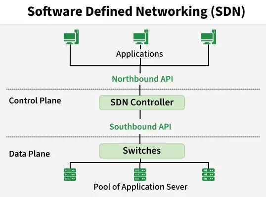
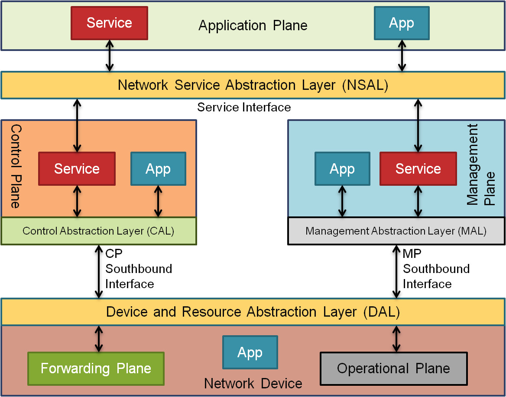
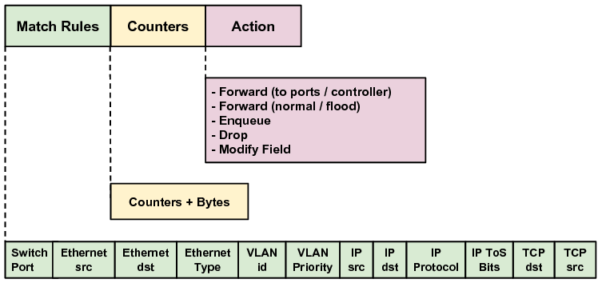

1. Introdução
Definição
Software-Defined Networking (SDN), ou Redes Definidas por Software, é uma abordagem para arquitetura de rede onde o controle da rede é separado do hardware físico subjacente e centralizado em um elemento lógico chamado controlador.
Como surgiu?
O conceito de SDN surgiu de pesquisas acadêmicas na Universidade de Stanford e na UC Berkeley por volta de 2008 (com o projeto Ethane e o protocolo OpenFlow). A motivação principal foi a necessidade de simplificar o gerenciamento de rede e permitir a inovação e o dinamismo que os data centers e a computação em nuvem exigiam, algo impossível de alcançar com as redes tradicionais rígidas.
2. Fundamentação Teórica
Rede Tradicional x SDN
- Rede Tradicional: O plano de controle (tomada de decisão) e o plano de encaminhamento (envio de pacotes) estão acoplados dentro do próprio dispositivo de hardware (switches/roteadores). O gerenciamento é descentralizado e feito dispositivo por dispositivo.
- SDN: Separa o plano de controle do plano de encaminhamento. O controle é centralizado em um software (controlador SDN), permitindo a programação da rede de forma dinâmica e automatizada.
Desafios
Transicionar de um modelo tradicional para SDN envolve quebra de paradigmas organizacionais, necessidade de requalificação de equipes, custos de migração, garantia de interoperabilidade entre equipamentos legados e novos sistemas, além de preocupações com a segurança da centralização do controle.
3. Arquitetura
Inicialmente, a visão que tinha sobre a SDN é que sua arquitetura podia ser subdividida em três camadas: aplicação, controle e dados.
A comunicação entre essas camadas ocorre por meio de duas interfaces principais:
- Northbound API: Responsável pela comunicação entre o Plano de Aplicação e o Plano de Controle.
- Southbound API: Responsável por interligar o Plano de Controle ao Plano de Dados.

Esse modelo evidencia o princípio central da SDN: a separação física e lógica entre os planos de controle e de dados. Nela, o controlador SDN (SDN Controller) assume a inteligência e as decisões de encaminhamento, enquanto os switches operam exclusivamente no plano de dados.
O controlador mantém uma visão lógica centralizada de toda a topologia da rede, o que simplifica o encaminhamento, o cálculo de rotas e a deteção de falhas.
Ao contrário das redes tradicionais, cujos switches e roteadores realizam o encaminhamento com base em prefixos IP de destino, os dispositivos em redes SDN utilizam tabelas de fluxo (flow tables), permitindo decisões de encaminhamento refinadas e programáveis baseadas em múltiplos campos do cabeçalho (Match-Action).
Os switches deixam de tomar decisões complexas de roteamento autonomamente. Eles limitam-se a consultar as suas tabelas de fluxo (flow tables) e executar as ações instruídas pelo controlador (por exemplo: encaminhar pela porta X, descartar pacote, alterar cabeçalho).
A partir da RFC 7426, foi proposta uma nova arquitetura subdividida em cinco planos: aplicação, controle, gerenciamento, encaminhamento e operacional.

Application Plane (Plano de Aplicação)
O plano onde residem as aplicações e os serviços que definem o comportamento da rede. Contém as aplicações e serviços de rede (como firewalls, roteamento, balanceadores de carga) que comunicam suas necessidades ao controlador.
Esse plano é essencial para tornar a SDN programável. Por meio dele, as aplicações de negócio interagem com o controlador de forma abstrata, sem precisar conhecer os detalhes internos do plano de controle ou da infraestrutura física da rede.
Control Plane (Plano de Controle)
É o "cérebro" da rede, centrado na figura do controlador SDN. Ele mantém a topologia lógica em tempo real (links ativos, latência atual, portas conectadas, largura de banda disponível) para calcular o menor caminho ou a melhor rota dinamicamente. O controlador toma as decisões inteligentes de sinalização, decide o caminho ponta a ponta e instala as instruções (flows) nos comutadores do Plano de Encaminhamento.
Management Plane (Plano de Gerenciamento)
Mantém o inventário global dos ativos (quais dispositivos existem, seus endereços de gerenciamento, estados de licença, versões de software e topologia física administrativa). O Plano de Gerenciamento vai além do monitoramento. Ele é responsável pelo provisionamento de ciclo de vida, configurações estáticas e políticas de longo prazo (ex.: atualizar firmware, configurar autenticação TLS, inicializar parâmetros de portas). Ele cuida da configuração do sistema, enquanto o controle cuida da dinâmica dos fluxos.
Forwarding Plane / Data Plane (Plano de Encaminhamento)
Composto pelos elementos de hardware/software (switches) responsáveis apenas por aplicar as regras de encaminhamento e mover os pacotes de dados.
Ele executa as regras da Tabela de Fluxo (Flow Table) enviadas pelo controle. Ele apenas encaminha, altera cabeçalhos ou descarta pacotes no hardware.
Operational Plane (Plano Operacional)
Ele gerencia o estado das portas, disponibilidade de memória e recursos de hardware do próprio dispositivo. Responsável pela operação contínua, auditoria, análise de dados e medição de desempenho da rede.
NSAL — Network Service Abstraction Layer (Camada de Abstração de Serviços de Rede)
Oferece uma abstração unificada dos serviços e recursos disponibilizados pelos planos subjacentes, servindo de ponte para as aplicações e serviços finais (Service e App).
Fornece às aplicações de alto nível um ponto de acesso genérico e simplificado para programar, orquestrar e consumir os serviços de rede, sem ter de lidar diretamente com a complexidade do controlo interno da rede.
DAL — Device and Resource Abstraction Layer (Camada de Abstração de Dispositivos e Recursos)
Atua como uma camada intermédia de abstração dos recursos físicos ou virtuais do hardware/dispositivo de rede.
Isola as especificidades de hardware do dispositivo, permitindo que os planos de controle e de gestão interajam com os recursos da rede de forma padronizada e independente de fabricante.
4. Ferramentas
CP e MP Southbound Interfaces (Interfaces Sul)
As interfaces Southbound conectam o Plano de Controle (CP) e o Plano de Gerenciamento (MP) aos dispositivos do plano de dados. Exemplos incluem o OpenFlow, NETCONF, OVSDB e gNMI.
OpenFlow
O OpenFlow é o primeiro e mais amplamente adotado protocolo padronizado de comunicação em SDN, ele atua na interface CP Southbound. Ele permite que o controlador comande diretamente as tabelas de fluxo dos switches do plano de dados.
O protocolo opera através de um Canal Seguro estabelecido entre o Controlador SDN e os comutadores OpenFlow, utilizando principalmente os seguintes mecanismos:
- Tabelas de Fluxo (Flow Tables): O OpenFlow define que o encaminhamento de pacotes não é mais baseado apenas em endereços IP tradicionais ou portas VLAN fixas, mas sim em regras de fluxo compostas por correspondências (match fields), contadores e ações.
- Mensagens Packet-In: Quando um pacote chega a um switch e não encontra nenhuma regra correspondente na sua tabela local (flow miss), o switch encapsula esse pacote e o envia para o controlador via OpenFlow para que este decida o que fazer com ele.
- Mensagens Flow-Mod: Após analisar o pacote recebido, o controlador calcula a rota ou política de segurança e envia uma mensagem OpenFlow de modificação de fluxo para instalar a regra diretamente na memória rápida (TCAM) do switch. A partir daí, os pacotes seguintes da mesma sessão são tratados diretamente no hardware em velocidade máxima.
- Mensagens Packet-Out: Permite que o controlador envie ativamente um pacote para fora através de uma porta específica de um comutador.

Fornece ao controlador uma visibilidade completa da topologia da rede e do estado dos fluxos, permitindo otimizações complexas de engenharia de tráfego.
Facilita testes de novos algoritmos de roteamento, balanceamento de carga e políticas de segurança diretamente via software, sem a necessidade de atualizar o firmware físico de cada switch da rede.
NETCONF
O NETCONF (Network Configuration Protocol) é um protocolo de gerenciamento e configuração de rede desenvolvido pelo IETF (RFC 6241). Em vez de focar no encaminhamento de pacotes em tempo real (como o OpenFlow), o NETCONF foi desenhado para configurar, gerenciar, instalar e atualizar o estado e as políticas de dispositivos de rede de forma programática.
Enquanto o Openflow é utilizada para fazer a comunicação entre o plano de controle e o plano de dados, o NETCONF é normalmente utilizado para para interligar o plano de gerenciamento e o plano operacional, ou seja, partipando da interface MP Southbound.
O NETCONF trabalha em conjunto estrito com a linguagem de modelagem YANG. Isso significa que o controlador não envia comandos arbitrários de linha de comando (CLI), mas sim estruturas de dados bem definidas (árvores hierárquicas em XML ou JSON).
O NETCONF introduz o conceito de bases de dados de configuração distintas nos equipamentos, tais como:
- Running: A configuração atualmente ativa no dispositivo.
- Candidate: Um espaço de rascunho onde o controlador pode testar e preparar alterações antes de aplicá-las.
- Startup: A configuração que será carregada quando o dispositivo for reiniciado.
Oferece comandos robustos e transacionais , permitindo que alterações complexas sejam aplicadas de forma atômica (tudo ou nada).
Suporta mecanismos de subscrição (Event Notifications), permitindo que o dispositivo informe ativamente ao controlador sobre falhas, alterações de estado ou alarmes.
Utiliza tipicamente o SSH (Secure Shell) garantindo autenticação, integridade e criptografia das mensagens.
Northbound Interface
A interface Northbound oferece a comunicação entre os planos de controle e gerenciamento e o plano de aplicação.
Diferente da interface Southbound (que possui padrões consolidados de mercado como o OpenFlow), a interface Northbound na RFC 7426 e no ecossistema SDN é predominantemente baseada em APIs e modelos de dados orientados a serviços. Os principais padrões utilizados incluem:
- REST / RESTful APIs (HTTP): O padrão mais difundido na indústria para a interface Northbound. Permite que as aplicações comuniquem com o controlador SDN utilizando requisições HTTP (GET, POST, PUT, DELETE) e payloads em JSON ou XML.
- gRPC / Protocol Buffers: Utilizado em arquiteturas modernas de SDN de alto desempenho. O gRPC oferece comunicação bidirecional rápida baseada em HTTP/2 e serialização eficiente, sendo ideal para streaming de telemetria e controle em tempo real.
Open vSwitch(OVS)
O open vSwitch é o principal switch utilizado dentro da arquitetura da SDN para redes virtuais.
O Open vSwitch é um switch virtual multicamada (multilayer virtual switch) de código aberto licenciado sob a licença Apache 2.0. Ele foi projetado para operar em ambientes de virtualização (como KVM, Xen e Proxmox), permitindo gerenciar o tráfego de rede entre máquinas virtuais (VMs) e containers dentro de um mesmo host físico ou entre múltiplos hosts por meio de túneis virtuais.
O OVS divide sua inteligência e processamento de pacotes em duas partes principais para otimizar o desempenho:
- Fast Path (Caminho Rápido - Kernel Space): Onde a grande maioria dos pacotes é processada. Se o OVS encontra uma regra de fluxo (flow) já conhecida no cache do kernel (ou via DPDK em espaço de usuário), ele encaminha o pacote instantaneamente com altíssima performance.
- Slow Path (Caminho Lento - User Space): Composto por daemons como o ovs-vswitchd e o ovsdb-server. Quando um pacote chega e não se encaixa em nenhuma regra existente no cache do kernel, ele é enviado para o user space. Lá, o OVS decide o que fazer (consultando suas tabelas locais ou um controlador SDN externo) e injeta uma nova regra de fluxo no fast path para que os próximos pacotes semelhantes passem direto.
Vantagens:
- Programabilidade Avançada: Suporte nativo a protocolos de gerenciamento e automação (OpenFlow, OVSDB, NetFlow, sFlow).
- Virtualização de Rede Avançada: Suporte nativo a encapsulamentos de túnel complexos exigidos em nuvens modernas (VXLAN, GRE, Geneve).
- Alta Performance: Com o uso de aceleração via DPDK (Data Plane Development Kit) ou processamento direto no kernel, atinge taxas de transferência compatíveis com ambientes de produção de alta escala.
- Integração de Mercado: É o padrão de facto em plataformas como OpenStack e serve de base para o OVN (Open Virtual Network).
Desvantagens:
- Consumo de Recursos: Como roda em software, o OVS consome ciclos de CPU do host físico para processar o tráfego (embora o DPDK mitigue isso, ele exige mais processamento que um switch ASIC físico dedicado).
- Complexidade de Diagnóstico: Depurar problemas de perda de pacotes ou latência em ambientes altamente dinâmicos com múltiplos túneis e regras de fluxo pode ser desafiador.
5. Funcionamento
Construção da topologia
O processo de construção da topologia e das tabelas de fluxo ocorre da seguinte maneira:
- Descoberta de Topologia: O controlador descobre a topologia enviando pacotes especiais (como o LLDP - Link Layer Discovery Protocol) por meio dos comutadores para mapear exatamente como cada porta está conectada.
- Representação em Grafo: O controlador constrói um grafo G=(V,E) em memória, onde V são os comutadores e E são os links entre eles (com pesos como latência, perda de pacote ou capacidade do link).
- Cálculo da Rota: Quando chega uma nova requisição de fluxo, o controlador executa algoritmos como Dijkstra (para menor caminho/latência) ou Constrained Shortest Path First (CSPF) para considerar restrições de largura de banda e QoS.
- Instalação das Regras: O controlador envia as regras calculadas para as tabelas de fluxo dos switches envolvidos via protocolo Southbound (ex.: OpenFlow).
Prevenção de Loops
Uma problemática importante em redes tradicionais é como podemos prevenir loops. O RIP não consegue evitar por completo loops e o OSPF só evita por completo loops se todos os roteadores tiverem a mesma topologia da rede.
Em SDN, o problema dos loops é mitigado de forma diferente graças à centralização e à lógica programável:
Como o controlador possui o grafo completo da rede, ele calcula caminhos acíclicos ponta a ponta antes de enviar as regras para os switches. Ele simplesmente não instala rotas que formem ciclos fechados para o mesmo fluxo de dados.
No entanto, ainda há risco de haver loops na SDN, O maior risco de loops em SDN acontece durante atualizações dinâmicas de rotas (quando o controlador tenta reencaminhar um fluxo e atualiza alguns switches antes de outros, criando temporariamente um loop de convergência). Para evitar isso, utilizam-se duas estratégias principais
- Atualizações em Duas Fases (Two-Phase Commit): O controlador grava as novas regras nos switches ao longo do novo caminho com um tag/VLAN diferente. Apenas quando todos os switches intermediários possuem a nova regra, o controlador atualiza o switch de entrada (ingress switch) para começar a etiquetar os pacotes com a nova rota.
- Regras Baseadas em Match Inequívoco: Cada entrada na Flow Table possui campos rígidos de correspondência (Match fields como IP de origem, IP de destino, porta TCP, etc.). O pacote só toma um único caminho pré-determinado, impedindo que circule indefinidamente.
6. Desafios e Mitigações
Ponto Único de Falha e Escalabilidade
No modelo tradicional de SDN, adota-se um controlador centralizado responsável por gerenciar as tabelas de fluxo dos switches no plano de dados. Contudo, essa arquitetura apresenta limitações críticas: além de constituir um ponto único de falha (Single Point of Failure - SPOF) — cuja indisponibilidade paralisa o encaminhamento de pacotes —, a centralização gera um gargalo de escalabilidade, dificultando o suporte a redes de grande porte com alto volume de requisições.
Com base nisso surge o controlador distribuído (Cluster) que consiste em múltiplos nós de controladores trabalhando em conjunto para gerenciar a infraestrutura.
Entre suas vantagens temos: alta disponibilidade, tolerância a falhas (resiliência) e escalabilidade geográfica. Exemplos famosos incluem o OpenDaylight e o ONOS rodando em modo cluster.
OpenDaylight(ODL)
O OpenDaylight, gerido pela Linux Foundation, é o projeto de controlador SDN open-source mais antigo e abrangente da indústria.
É uma plataforma modular extremamente flexível construída em Java (sobre o framework OSGi). O ODL funciona como uma "caixa de ferramentas": ele não impõe uma única aplicação de rede, mas fornece dezenas de módulos que você pode ativar ou desativar conforme a necessidade (suportando OpenFlow, NETCONF/YANG, BGP, OSPF, etc.).
Foco Principal: Redes de grandes empresas (Enterprise), data centers corporativos e ambientes heterogêneos que precisam integrar tecnologias tradicionais e programáveis.
Vantagens:
- Ecossistema massivo e maduro, com suporte a uma enorme variedade de protocolos Southbound.
- Extremamente flexível e personalizável para diferentes use-cases.
Desvantagem:
- Curva de aprendizado íngreme e alta complexidade de configuração devido à sua arquitetura modular pesada.
ONOS
O ONOS, também hospedado pela Linux Foundation, foi construído do zero com um foco diferente: atender às demandas de redes de operadoras de telecomunicações (Carrier-Grade e WANs de alta escala).
Foi projetado desde o início para operar em cluster distribuído, priorizando alta disponibilidade, resiliência e desempenho em tempo real. Ele trata o cluster de controladores como um único sistema operacional de rede lógico. O ONOS aposta fortemente no conceito de Intent-Based Networking (redes baseadas em intenção).
Foco Principal: Provedores de serviços de internet (ISPs), redes de longa distância (WAN), redes de acesso óptico e infraestruturas críticas onde a queda de um nó não pode derrubar a rede.
Vantagens:
- Arquitetura distribuída nativa altamente eficiente (ótima para evitar o SPOF e garantir escalabilidade)
- Excelente desempenho (throughput e latência no processamento de fluxos).
- Foco em abstrações de alto nível (Intents).
Desvantagem:
- Pode ser excessivamente complexo se implantado em redes pequenas ou ambientes que exigem apenas simplicidade monolítica.
Segurança: Criptografia (TLS/SSL)
Desafio: Interceptação do tráfego de controle entre o controlador e os switches.
Mitigação: Obrigatoriedade do uso de canais criptografados com TLS/SSL para toda comunicação no canal de controle.
Desempenho
Desafio: Gargalos no controlador devido ao grande volume de pacotes desconhecidos requerendo instrução.
Mitigação: Arquitetura de controle hierárquica, processamento de fluxos reativo/proativo e switches inteligentes com suporte a P4.
7. Aplicações
SD-WAN (Software-Defined WAN)
Aplicação da tecnologia SDN em redes de longa distância para gerenciar dinamicamente múltiplos tipos de conexões (MPLS, Internet, 4G/5G) com menor custo e maior eficiência.
Operadoras de Telecomunicações e Redes 5G (Telco SDN)
SDN possibilita a virtualização de funções de rede, criação de fatiamento de rede (Network Slicing) no 5G e gestão dinâmica de banda sob demanda.
Datacenters
Permite automação completa do provisionamento de redes virtuais, multitenancy seguro, otimização do uso de links e facilidade no orchestration de microsserviços e contêineres.
SDN x NFV
Enquanto o SDN separa o controle do encaminhamento para centralizar a inteligência, a NFV (Network Functions Virtualization) foca em virtualizar as funções de rede (como roteadores, firewalls e NATs), rodando-as em software sobre hardware genérico. São tecnologias complementares.
8. Conclusão
A arquitetura SDN revolucionou a maneira como projetamos e operamos redes de computadores. Ao trazer a programabilidade e a automação do software para o mundo do hardware de rede, o SDN tornou-se o pilar fundamental para ecossistemas modernos como computação em nuvem, data centers de grande escala e redes 5G.
9. Perguntas
10. Referências
CISCO. Software-Defined Networking (SDN): What It Is and How It Works. Disponível em: <https://www.cisco.com/c/en/us/solutions/software-defined-networking/overview.html>. Acesso em: 19 out. 2026.
ERICKSON, D. The Beacon Openflow Controller. In: ACM SIGCOMM WORKSHOP ON HOT TOPICS IN SOFTWARE DEFINED NETWORKING (HOTSDN), 2., 2013, Verona. Proceedings... New York: ACM, 2013. p. 13-18.
GEEKSFORGEEKS. Software Defined Networking (SDN). Disponível em: <https://www.geeksforgeeks.org/computer-networks/software-defined-networking/>. Acesso em: 19 out. 2026.
HALEPLIDIS, E. Overview of RFC7426: SDN layers and architecture terminology. IEEE SDN Newsletter, set. 2017. Disponível em: <https://sdn.ieee.org/newsletter/september-2017/overview-of-rfc7426-sdn-layers-and-architecture-terminology>. Acesso em: 19 out. 2026.
INTERNET ENGINEERING TASK FORCE (IETF). RFC 1953: GZIP file format specification version 4.3. Disponível em: <https://www.rfc-editor.org/info/rfc1953>. Acesso em: 19 out. 2026.
INTERNET ENGINEERING TASK FORCE (IETF). RFC 2297: Remote Managed Client-Initiated Transfer Protocol. Disponível em: <https://www.rfc-editor.org/info/rfc2297>. Acesso em: 19 out. 2026.
INTERNET ENGINEERING TASK FORCE (IETF). RFC 7149: Software-Defined Networking: A Perspective from Within a Service Provider Environment. Disponível em: <https://www.rfc-editor.org/info/rfc7149>. Acesso em: 19 out. 2026.
INTERNET ENGINEERING TASK FORCE (IETF). RFC 7426: Software-Defined Networking (SDN): Layers and Architecture Terminology. Disponível em: <https://www.rfc-editor.org/info/rfc7426/>. Acesso em: 19 out. 2026.
KREUTZ, D. et al. Software-Defined Networking: A Comprehensive Survey. Proceedings of the IEEE, v. 103, n. 1, p. 14-76, jan. 2015. Disponível em: <https://conferences.sigcomm.org/sigcomm/2015/pdf/papers/keynote.pdf>. Acesso em: 19 out. 2026.
KUROSE, James F.; ROSS, Keith W. Redes de computadores e a internet: uma abordagem top-down. Tradução: Francisco Araújo da Costa. Revisão técnica: Wagner Zucchi. 8. ed. Porto Alegre: Bookman; São Paulo: Pearson, 2021.
SILVA, A. et al. Security in Software-Defined Networking: A survey. Security and Communication Networks, v. 2018, p. 1-22, 2018. Disponível em: <https://onlinelibrary.wiley.com/doi/abs/10.1002/sec.1737>. Acesso em: 19 out. 2026.